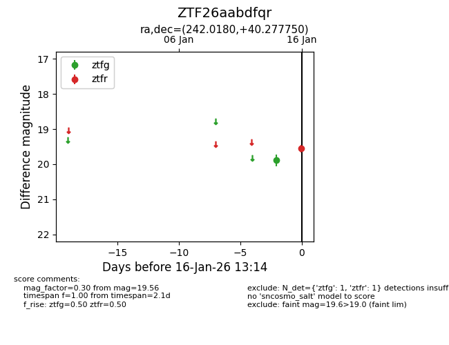
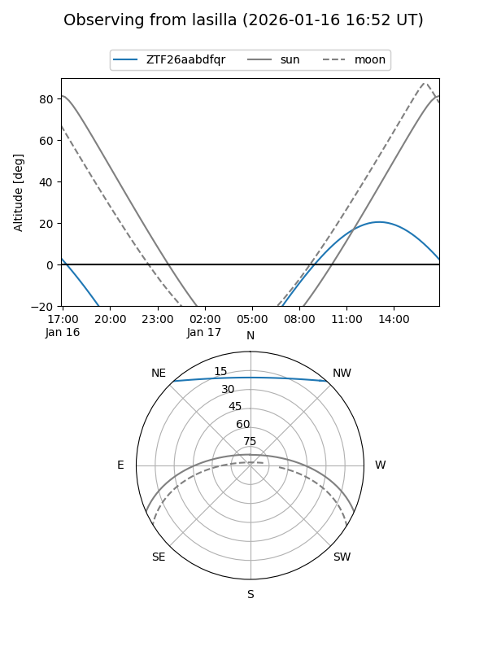

ZTF26aabdfqr
Target ZTF26aabdfqr at 2026-01-16 13:16
Aliases and brokers:
FINK: link
Lasair: link
ALeRCE: link
alt names
ZTF26aabdfqr (ztf,fink_ztf)
Coordinates:
equatorial (ra, dec) = 242.0180,+40.27775
equatorial (HMS+DMS) = 16:08:04.32,+40:16:39.90
galactic (l, b) = (64.0102,+47.63167)
Flags:
Photometry:
last ztfg=19.89, ztfr=19.56
1 ztfg, 1 ztfr detections
Lightcurve

Visibility


Additional plots